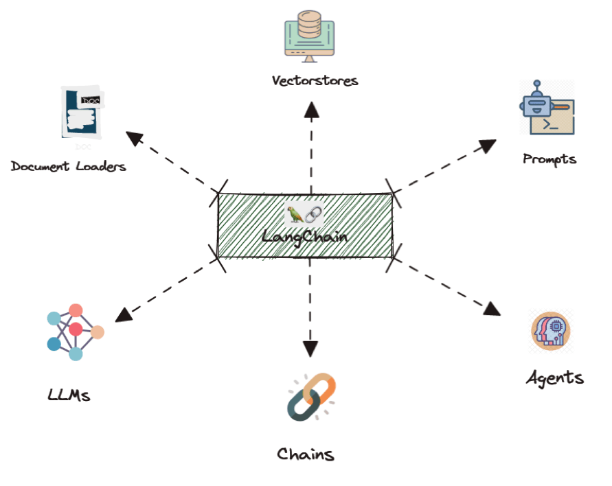
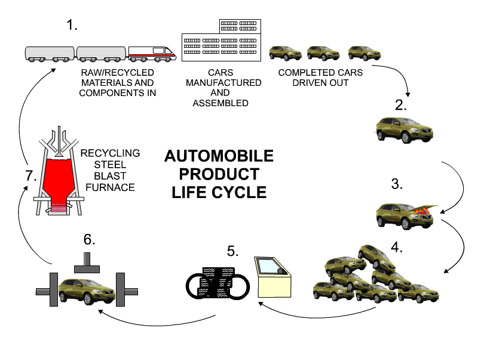

Rishi Sharma
üëâ rishisharma2628@gmail.com üëâ +91 8860551924
Data Scientist/Machine Learning Engineer at Deloitte USI with experience in predictive modeling using a variety of supervised & unsupervised methodologies. I have a strong background in Natural Language Processing and Computer Vision and have experience working with Python, TensorFlow, Flask, SQL, AWS.
Skills & Qualifications
- ✔️ 8+ Years of experience in building, deploying and maintaining ML models.
- ✔️ Knowledge of programming languages such as Python, SQL, Pyspark
- ✔️ Experience with deep learning frameworks such as TensorFlow and Keras.
- ✔️ Understanding of CI/CD pipelines and Agile methodologies.
- ✔️ Extensive knowledge in API development using Flask and Django
- ✔️ Managed the deployment scaling, and maintenance of multiple applications
Tech stack
Awards & Accomplishments
Work History
09/2023 - Present
Developed an audit summarization tool to generate comprehensive reports from client document files, enhancing data insights and report summaries.
- Engineered the backend of the application using Python, FastAPI, and AsyncIO for efficient and scalable performance.
- Implemented advanced techniques such as MapReduce, Retrieval-Augmented Generation (RAG), and vector databases in Langchain to optimize operations and minimize latency.
- Integrated OpenAI models (e.g., GPT-3.5, GPT-4, Davinci) with Langchain for sophisticated summarization and categorization tasks.
- Deployed the application on AWS, utilizing services like EC2 and S3 to ensure scalable, reliable, and secure hosting.
01/2023 - 08/2023
Leveraged Databricks to orchestrate complex data workflows, encompassing data preprocessing, advanced feature engineering, and predictive modeling for diverse car model manufacturing lines.
- Spearheaded the development of cutting-edge pipelines within the Airflow framework, meticulously crafting Python-based Directed Acyclic Graphs (DAGs) for enhanced operational efficiency.
- Anticipated annual cost savings of $100,000 through the optimization of part quantity requirements across three manufacturing plants.
- Demonstrated proficiency in Python, Databricks, Jupyter Notebooks, MLOps, and Airflow to drive transformative results and operational excellence.
03/2022 - 12/2022
Developed a voice-enabled chatbot using OpenAI models (GPT-3.5) to take orders from customers in drive-throughs for a global restaurant chain.
- Designed and implemented the chatbot flow using Python and FastAPI, including handling edge cases to ensure robust and seamless interaction.
- Trained and integrated a recommendation system to suggest and upsell menu items, enhancing order processing speed and improving user experience.
- Engineered backend services to manage interactions between chatbot & recommendation system, ensuring efficient data processing & API communication.
- Achieved a 7% increase in average order value through model recommendations, significantly improving client service delivery and customer satisfaction.
04/2021 - 03/2022

Preforming Market Segmentation to target specific consumers with higher credit card acceptance, in order to reduce customer acquisition cost.
- Analysing data of customers with no credit history, such as rolling average account balance, number of weekly transactions, items purchased, etc
- Creating a probabilistic model to estimate their probability to default & creating decile & lift charts to shortlist the people in top 2 deciles
01/2020 - 03/2021

Building Machine Learning models for health care providers to shortlist customers for better sales & lower customer acquisition cost.
- Analysing RX and Medical claims history of members, from hive database along with other related details like Demographics, Online activity, AWV and other factors that could aid in the improvement of acceptance rate.
- Creating the Model based on the above user data. Recommendation from model led to 4% volume uplift. Received recognition from client’s end.
03/2019 - 01/2020

Making use of machine learning models to perform multi-class classification for the user submitted insurance claims
- Making use of OpenCV and Tesseract to segment image documents and extract doctor's notes and CPT codes
- Generating word embeddings using NLP models such as transformers, glove, Word2Vec, GPT and BERT.
- Integrating the model in production pipeline over AWS. Cutting down operational cost by $ 100K dollars across 3 claim centres
09/2017 - 02/2019

Made use of an ensemble of machine learning models to perform classification on credit defaulters with no loan history.
- Making use of user specific data such as age, income, occupation, collateral, etc. to predict metrics such as PD, LGD and EAD for each user.
- Modelling led to a reduction in default rate by 6% saving a total of potential $50K for client across 7 bank branches.